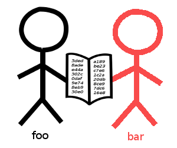

Let's work on Rust!
fn main() {
println!("வணக்கம்!");
}
whoami
- Full-stack dev (Swift, Rust, Docker, Typescript, etc.)
- {twitter, github}::wafflespeanut
- Organizer of Rust Chennai meetup
- Contributor to Servo browser engine (2015-2017)
- Now working on a bunch of open-source projects
Everyone have Rust?
If not, then follow the instructions at https://rustup.rs
cargo new workshopcd workshop; cargo run
Brief introduction
- Rigorous User-friendly Systems Technology
- Not Fe2O3, but a fungus!
- Systems programming language
- Performance without compromising safety
- No Garbage Collector!
- Fearless concurrency
- Strong static typing, zero-cost abstractions, generics, type inference, pattern matching, ...
- Most loved language for 3 years!
... and a lot more buzzwords!
Why Rust?
Let's play with C/C++
To wit! Exhibit A
int *create_num() {
int a = 2; // assume some random number
return &a;
}
void main() {
int *raw_ptr = create_num();
*raw_ptr = 3;
}
Segmentation fault (core dumped)
Another?
void main() {
int *ptr = malloc(sizeof(int));
free(ptr);
// do some stuff
free(ptr);
}
double free or corruption (fasttop): 0x000000000201c010
More?!!
- Use after free bugs
- Out of bounds indexing
- Iterator invalidation
- Null pointer dereference
- Data races in parallelization
Why care?
Segfaults! Crashes! Memory leaks!

From OS and compilers to browser and game engines, C/C++ is almost everywhere!
Why not use something else?

Why not use something else?

Existing solutions use GC
- Coder creates objects. Computer removes them.(no explicit "malloc" or "free")
- Tracing GC: It doesn't know when to remove objects. Tracks them periodically.
- RC-based GC: Atomic operation (expensive).
Not good enough!
- More CPU and memory - Intensive care required for real-time applications.
- Less control over objects.
- Limited concurrency - Global locking
Fast, Reliable, Productive.
- Pick three!
Core concepts
(Good stuff!)
- Mutability
- Ownership
- Borrowing
- Lifetimes
COMPILE TIME
Mutability
(Variables are immutable by default)
let i = 5;
i = 10; // NOPE!
error: re-assignment of immutable variable `i`
let mut i = 5; // explicitly mark it as `mut`
i = 10; // Okay now!
Ownership
Imagine sticks and books ...
 |
 |
|
Magic book
(resource / value)
|
Stick
(owner / scope)
|
Rules
- Any book should be owned by exactly one stick.
- Books automatically vanish when there are no sticks to own them.
- At any moment, any number of sticks can read the book OR exactly one stick can write to the book (with the owner's consent).
struct Thing { name: String }
fn main() {
let thor = Thing { name: "Mjolnir".into() };
}


let foo = Thing { name: "secrets".into() };
let bar = foo;
println!("{}", foo.name);


error: use of moved value `foo.name`
fn print_thing(thing: Thing) {
println!("Name: {}", thing.name);
}
fn main() {
let foo = Thing { name: "secrets".into() };
print_thing(foo);
print_thing(foo);
}
error: use of moved value `foo`
9 | print_thing(foo);
| --- value moved here
10 | print_thing(foo);
| ^^^ value used here after move
|
= note: move occurs because `foo` has type `Thing`,
which does not implement the `Copy` trait
Types
u8, u16, u32, u64i8, i16, i32, i64 |
usize, isize |
char, bool |
f32, f64 |
| all pointers and arrays |
| Copy (auto copied) |
String |
Vec<T> |
HashMap<K, V> |
| ... all other types! |
|
Clone
(moved / explicit copy)
|
See it in action!
fn take<T>(_: T) {} // useless function that takes anything
let x = 1;
let y = [1, 2, 3, 4, 5];
take(x);
take(y);
println!("{}", x); // works
println!("{:?}", y); // also works
let x = vec![1, 2, 3]; // shortcut for vector
take(x);
println!("{:?}", x); // nope!
error: use of moved value `x`"Great! How do you do stuff, then?"

You borrow it!
You can read it whenever/however you want!
... you can't write though!
Borrowing
(fancy name for taking references)
fn print_thing(thing; &Thing) {
println!("Name: {}", thing.name);
}
fn main() {
let foo = Thing { name: "foo".into() };
print_thing(&foo);
println!("{}", foo.name); // works
}
Here's the catch!
fn change_thing(thing: &Thing) {
thing.name = "bar".into();
}
fn main() {
let foo = Thing { name: "foo".into() };
change_thing(&foo); // nope!
}
error: cannot assign to immutable borrowed content `*thing`
"Okay, what if you wanna change stuff?"

You ask the owner!
Tiny change...
fn change_thing(thing: &mut Thing) { // takes mutable ref.
thing.name = "bar".into();
}
fn main() {
let foo = Thing { name: "foo".into() };
change_thing(&mut foo); // owner gives mutable ref.
println!("{}", foo.name); // prints "bar"
}
Or, you can get a copy...
fn take(mut thing: Thing) { // Note the "mut"
thing.name = "bar";
}
fn main() {
let foo = Thing { name: "foo" };
take(foo.clone()); // pass the copy
println!("{}", foo.name); // prints "foo"
}
Many readers, one writer.
let mut a = vec![1, 2, 3];
{
let b = &a; // borrowed
a.push(4); // doesn't work
} // borrow ends here
error: cannot borrow `a` as mutable because it is also borrowed as immutable
let mut a = vec![1, 2, 3];
{
let b = &a;
println!("{}", a[0]) // immutable reference
}
a.push(4); // we can mutate now
Many readers, one writer.
let mut a = vec![1, 2, 3];
{
let b = &mut a; // mutably borrowed
let c = &mut a; // cannot borrow again!
} // borrow ends here
error: cannot borrow `a` as mutable more than once
let mut a = vec![1, 2, 3];
{
let b = &mut a;
b.push(4); // works (mutable reference)
}
let c = &mut a; // works now
println!("{}", a[0]); // doesn't work (mutably borrowed)
Owned and Borrowed
let static_str = "Hello, world"; // &'static str
let heap_str = {
let owned: String = static_str.into(); // heap-allocated
let borrowed = &owned; // &'a str
owned
};
let array: &[u8] = &[0, 1, 2, 3, 4]; // &'static [u8]
let vector = array.to_owned(); // Vec<u8>
Lifetimes
What if the owner dies when you're reading/writing?

References have lifetimes!
let heap_int = {
let five = Box::new(5u8); // malloc(1)
&five
}; // free() happened
// `heap_int` DANGLING??!!
error: `five` does not live long enough
Let's try something scary...
fn foo<'a, 'b>(s1: &'a str, s2: &'b str) -> &'a str {
s2
}
fn main() {
let a = "Hello";
let b = {
let b = "world";
foo(a, b)
};
println!("{} {}", a, b);
}
error: lifetime of reference outlives lifetime of borrowed content...
Questions?
Basics
Expression-based
(semicolons have meaning!)
let a = 5; // variable binding
let b = if a > 1 {
println!("{}", a); // 5
let a = 3;
println!("{}", a); // 3 (different "a")
a * 3 // no semicolon - automatically returns the value
} else {
5
};
// "a" is still '5' here
Loops
for i in 0..5 {}
let mut i = 0;
while i < 10 {
i += 2;
}
loop { // infinite loop
i += 2;
if i > 20 {
break
}
}
Sorry, no "do ... while"
Structures & Enumerations
struct Unit; // unit struct (zero-sized type)
struct Foo(i32, String); // Tuple struct
struct Book {
id: usize, // max size supported by arch
name: String,
}
enum Foobar {
Id(isize), // It can hold a type
Object { id: usize, name: String }, // struct-like
Empty, // could also be empty
}
Patterns (basic)
let x = 5;
let (a, b) = (5, 10); // unpack tuples
match x { // wayyy cooler than "switch ... case"
0 => println!("bummer"),
1 | 2 | 3 => println!("okay"),
4 ... 10 => { // could have its own block
println!("Nice! Got {}", x);
},
x @ 11 ... 20 | x @ 51 ... 80 => println!("Wow! ({})", x),
_ => (), // or nothing
}
If you think this is just for numbers and characters, then you're mistaken.
Patterns (complex)
let e = Foobar::Empty;
let book = Book { id: 10, name: String::from("Booya") };
let Book { id, name } = book;
if let Foobar::Object { id, name } = e {
println!("{}: {}", id, name);
}
match (id, &*name) {
(10, "Booya") => println!("Yay!"),
(i, b) if b == "Harry Potter" => println!("id: {}", i),
// (_, bk) => println!("Got {}", bk), // uncomment
}
error: non-exhaustive patterns: `(_, &_)` not covered
Methods (#1)
struct Book { id: usize, name: String }
impl Book {
// associated function
fn new(id: usize, name: String) -> Book {
Book { id, name }
}
fn name(&self) -> &str { &self.name }
fn id(&self) -> usize { self.id }
}
fn main() {
let b = Book::new(1, String::from("New Book"));
println!("{}: {}", b.id(), b.name());
}
Methods (#2)
struct Book { id: usize, name: String }
impl Book {
fn update_name(&mut self, name: String) {
self.name = name;
}
}
fn main() {
let mut b = Book::new(1, String::from("New Book"));
b.update_name(String::from("Old book"));
println!("{}: {}", b.id(), b.name());
}
Generics
fn take<T>(_value: T) {} // Remember this?
struct Object<T> { // struct which stores any type
id: usize
value: T,
}
No "nullable" or "exceptions"
pub enum Option<T> { // Nullable type in Rust
Some(T),
None, // empty enum variant to represent null
}
pub enum Result<T, E> { // Fallible type in Rust
Ok(T),
Err(E), // no throwing or catching, only matching
}
Traits!
(Now, things get interesting!)
trait Object {
fn id(&self) -> usize;
fn name(&self) -> &str;
fn print(&self) { // default (overridable)
println!("{} (id: {})", self.id(), self.name());
}
}
Implementation
struct Notebook { id: usize, name: String, pages: usize }
impl Object for Notebook {
fn id(&self) -> usize { self.id }
fn name(&self) -> &str { &self.name }
}
... one more.
struct Lead { count: usize, thickness: f32 }
struct Pencil { id: usize, name: String, lead: Lead }
impl Object for Pencil {
fn id(&self) -> usize { self.id }
fn name(&self) -> &str { &self.name }
}
Trait Bounds
// Generic function
fn pretty_print<T>(obj: T) {
obj.print()
}
error: no method named `print` found for type `T` in the current scope
fn pretty_print<T>(obj: T) where T: Object {
obj.print()
}
Monomorphization (static dispatch)
fn pretty_print<T>(obj: T) where T: Object {
obj.print()
}
let pencil = Pencil {
id: 0,
name: String::from("Camlin"),
lead: Lead { count: 0, thickness: 0.7 },
};
pretty_print(pencil);
fn pretty_print_pencil(obj: Pencil) { // monomorphized
obj.print()
}
Trait Bounds
type Container<T> = Vec<T> // alias
struct PencilBox<T, U> { // ... works for enums and structs
pencils: Container<T>,
special: Option<U>,
}
trait Gift: Object { // ... also traits (inheritance)
fn has_gift(&self) -> bool;
}
impl<T, U> PencilBox<T, U> where T: Object {
fn pencil_count(&self) -> usize {
self.pencils.len()
}
}
Use case
struct Lead { count: usize, thickness: f32 }
struct Pencil { id: usize, name: String, lead: Lead }
use std::ops::Add;
impl AddAssign<usize> for Lead {
fn add_assign(&mut self, count: usize) {
self.count += count;
}
}
let mut pencil = Pencil {
id: 0, name: String::from("Camlin"),
lead: Lead { count: 0, thickness: 0.7 },
};
pencil.lead += 5; // Yay!
Iterators
pub trait Iterator {
type Item;
fn next(&mut self) -> Option<Self::Item>;
... // all other methods for free
}
let range = (0..10); // `Range`
let sum = range.fold(0, |total, &x| total + x); // 45
let vec = (65..91).collect::<Vec<u8>>
let iter = vec.into_iter().map(|i| i as char); // `Map`
let s = iter.collect::<String>;
println!("{}", s); // ABC...
Unsafe
Rust can segfault
use std::{mem, ptr};
let mut p: *mut i32 = ptr::null_mut();
unsafe {
let x = Box::new(5); // heap allocation
ptr::write(p, *x);
} // deallocated
unsafe {
println!("{}", *p); // uh oh, dangling pointer
}
Things I haven't covered...
- Closures
- Threads
- Macros
- Plugins
- Futures
Projects using Rust
Resources
- Book - https://doc.rust-lang.org/book/
- Standard library - https://doc.rust-lang.org/std/
- Rust by example - https://rustbyexample.com/
- Playground - https://play.rust-lang.org/
Community
- IRC:
- Reddit: https://reddit.com/r/rust/
- Forum: https://users.rust-lang.org/
- Blog: https://blog.rust-lang.org/